Mechanical Design
Component development • 3D CAD • Design iteration • Engineering drawings
Portfolio / 2026
Mechanical Engineer | Automotive Design | Motorsport & Simulation
Engineering-focused portfolio showcasing mechanical design, 3D CAD development, aerodynamic analysis and CFD simulation, with a particular interest in automotive and motorsport engineering. My projects show how I solve engineering problems through CAD modelling, computational analysis, design development and iterative improvement.
University of Peloponnese • Greece
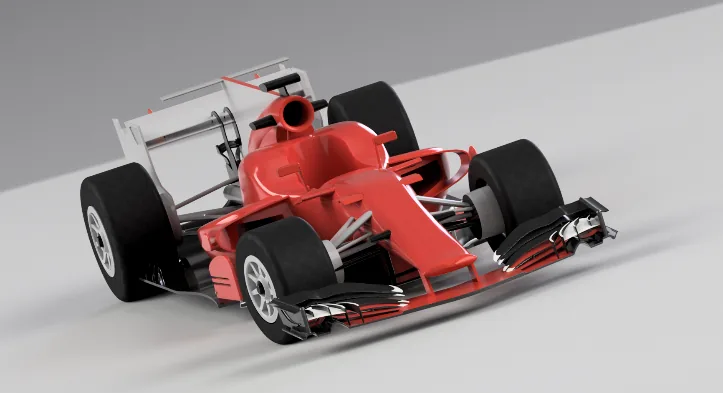
Profile
I am a Mechanical Engineer from Greece with a strong interest in automotive and motorsport engineering, particularly mechanical design, vehicle aerodynamics and computational simulation. My background combines CAD development, CFD analysis, prototyping and practical exposure to vehicle systems.
My main area of interest is the development of performance-oriented engineering solutions, where geometry, mechanical design and aerodynamic behaviour can be evaluated through engineering analysis. During my final-year thesis, I developed a 3D Formula 1 race car model and investigated its aerodynamic performance using computational fluid dynamics, studying airflow behaviour and pressure distribution around the vehicle.
Alongside my academic work, my involvement with the Hyperion Drone Team provided practical experience in CAD component development, aerodynamic configuration and 3D printing within a collaborative engineering environment — taking design concepts beyond the digital model and considering how components are developed and produced.
I am particularly interested in opportunities where I can continue developing as a mechanical or automotive design engineer, contributing to the design, analysis and development of high-performance engineering systems.
Component development • 3D CAD • Design iteration • Engineering drawings
Automotive systems • Vehicle performance • Motorsport applications
External aerodynamics • Airflow behaviour • Pressure distribution • Drag & downforce
CFD • FEA fundamentals • Simulation-driven design • Prototyping
Technical toolkit
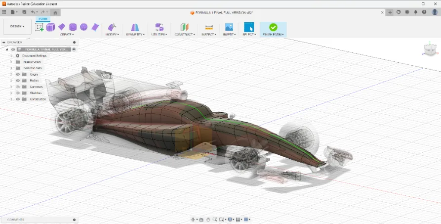
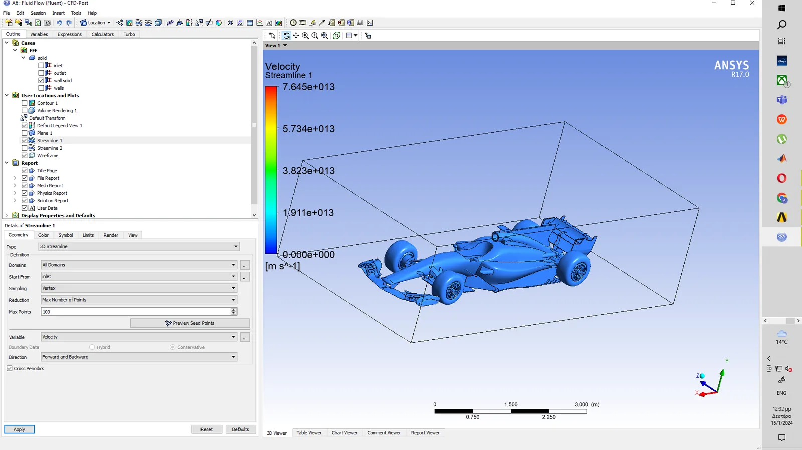
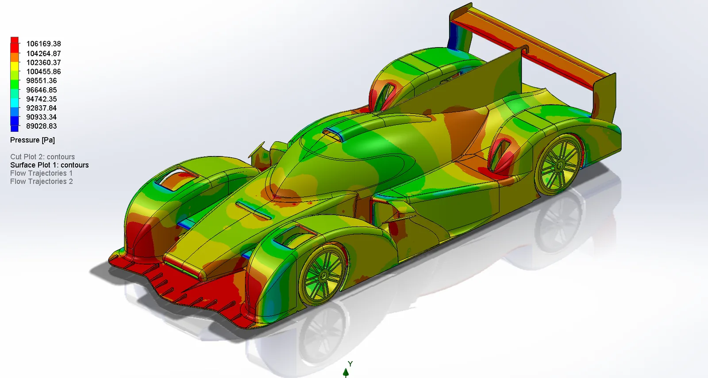
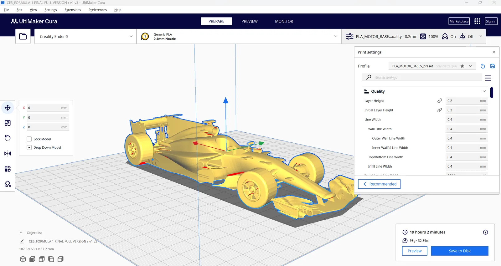
01 | Diploma thesis
This project focused on the aerodynamic assessment of a Formula 1-inspired race car using Computational Fluid Dynamics (CFD). A 3D vehicle model was developed in CAD and prepared for external-flow simulation to investigate airflow characteristics, pressure distribution and aerodynamic force generation.
The study combined CAD modelling and numerical analysis to evaluate the relationship between vehicle geometry and aerodynamic performance, with emphasis on drag, downforce and flow-field characteristics.
ThesisAerodynamic Analysis of an F1 Race Car Using Computational Fluid Dynamics
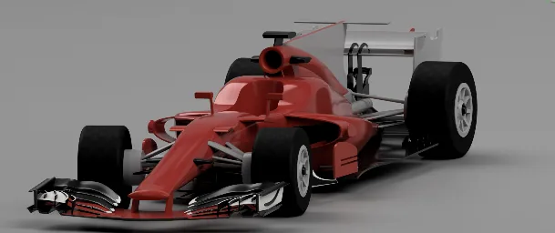
A detailed 3D model of a Formula 1-inspired race car was developed in Autodesk Fusion 360, focusing on the vehicle's main bodywork and aerodynamic components. The model established the geometric foundation for subsequent CFD analysis and aerodynamic performance evaluation.
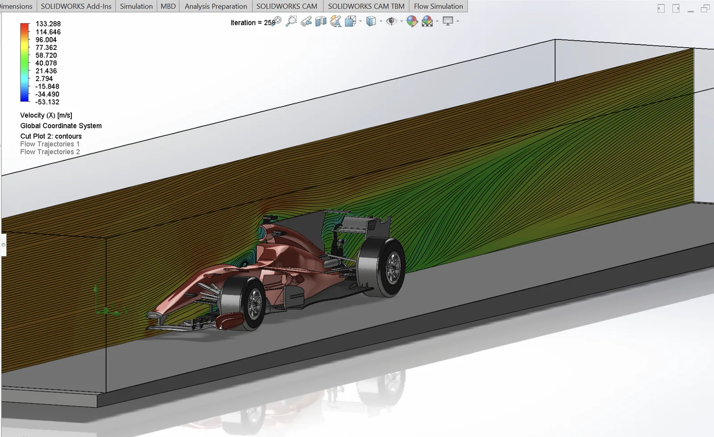
The project integrated 3D CAD development, external-flow CFD simulation and aerodynamic assessment to investigate airflow around the vehicle. The analysis focused on velocity distribution, surface pressure and aerodynamic force generation, providing insight into the influence of vehicle geometry on performance.
02 | CFD workflow
The 3D vehicle geometry was prepared for external-flow simulation in SOLIDWORKS Flow Simulation. The computational domain and flow conditions were defined to investigate the interaction between the incoming airflow and the vehicle's aerodynamic surfaces.
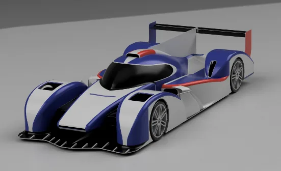
A 3D model of the Toyota TS010 Group C prototype was developed as part of the thesis, providing a reference vehicle for comparative aerodynamic investigation. It represents a different racing-car configuration, enabling the examination of differences in body geometry, aerodynamic surfaces and overall vehicle proportions.
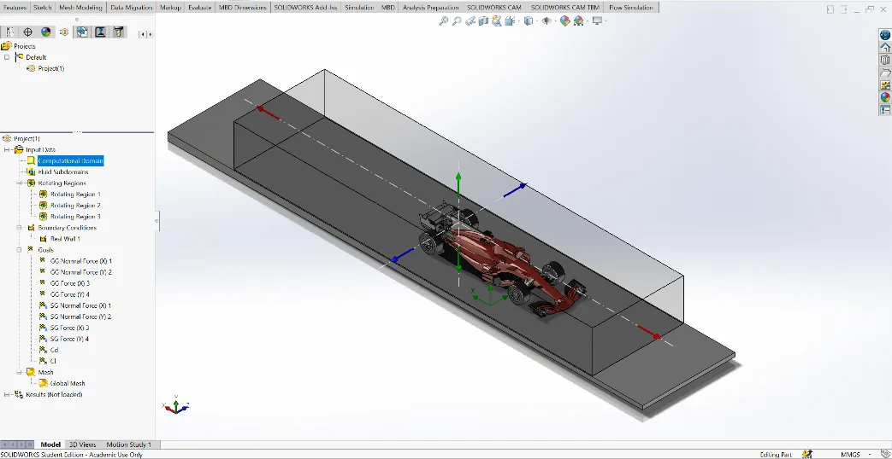
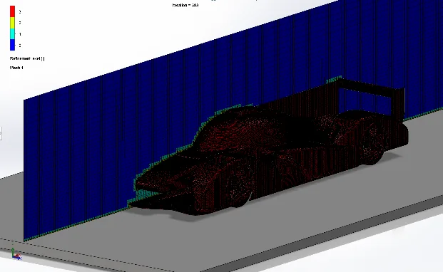
The simulation focused on the external airflow field around the vehicle, with particular attention to the computational domain, boundary conditions and mesh resolution.
Defined to enclose the vehicle and capture the external flow field, including upstream flow development, interaction with the bodywork and downstream wake formation.
Assigned to define the incoming airflow, outlet pressure and the interaction between the fluid and vehicle surfaces.
A computational mesh around the geometry represents the aerodynamic surfaces and resolves important flow features, including regions of potential separation and wake development.
CFD was used to investigate airflow around the Formula 1 and Toyota TS010 models, comparing pressure distribution, flow velocity and wake development.
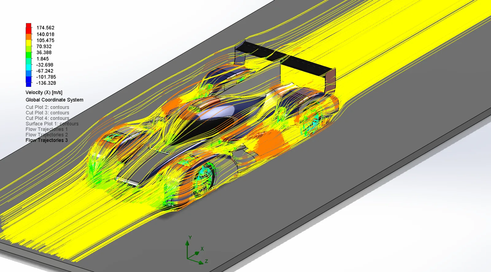
The comparison examines how differences in vehicle geometry and aerodynamic configuration influence external airflow. Pressure distribution, velocity patterns and wake development provide insight into the aerodynamic characteristics of each design.
03 | Team project
Participated in the Hyperion Drone Team, a multidisciplinary university engineering project focused on unmanned aerial vehicle development. During my year with the team, I collaborated with fellow engineering students on the ongoing development of UAV systems, gaining practical experience in technical problem-solving and collaborative engineering.
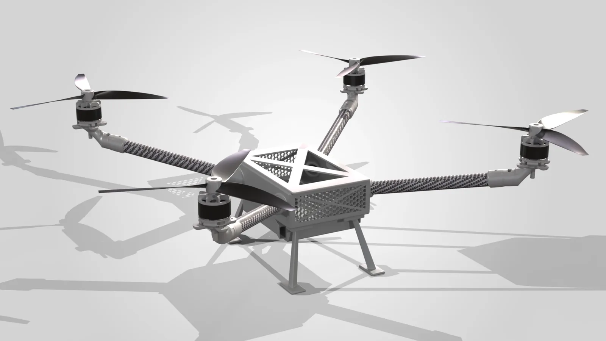
Contributed to the design and development of the second version of the team's original drone through CAD modelling and mechanical design. Supported the refinement of structural components, evaluated design concepts and prepared components for manufacturing.
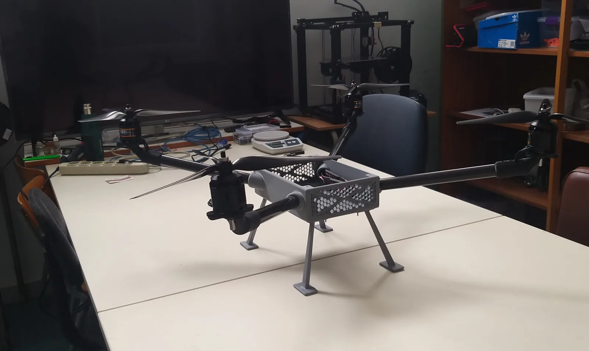
Supported iterative hardware development and practical integration, translating design concepts into assembled and operational UAV prototypes. Developed 3D-printed prototypes and supported manufacturing activities.
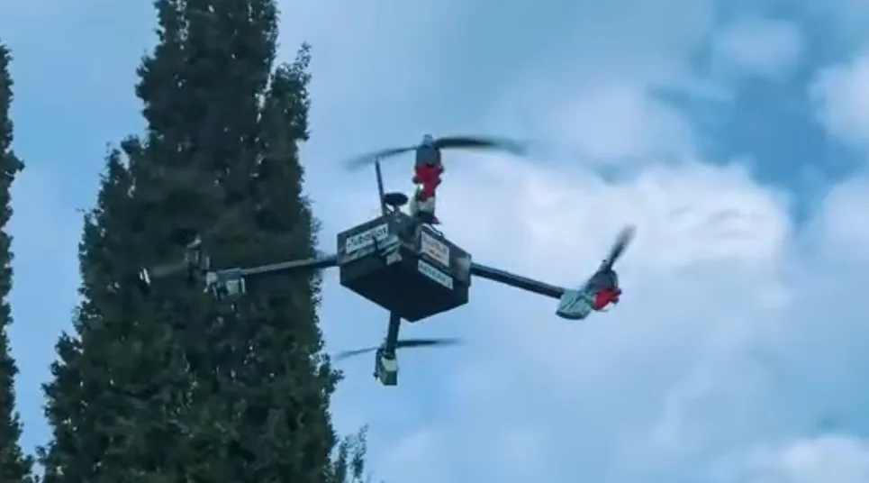
Collaborated with a multidisciplinary team to evaluate prototypes, identify potential improvements and refine component designs within an established team and an ongoing engineering project.
The experience strengthened my practical understanding of the relationship between engineering design, manufacturing and flight performance. Working within a multidisciplinary team enhanced my ability to contribute to iterative development, hands-on problem-solving and the refinement of engineering solutions.
04 | Vehicle engineering exposure
Practical experience around vehicle inspection, testing and diagnostics. During my internship I gained hands-on experience in automotive inspection procedures, vehicle testing and safety assessment, including vehicle identification, emissions testing and the operation of specialised inspection equipment.
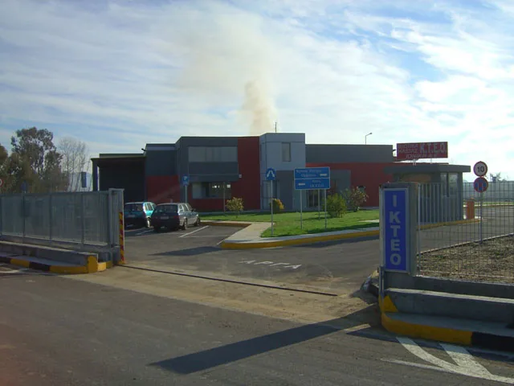
Assisted with vehicle identification and registration verification as part of the technical inspection process. Performed exhaust-emission checks on petrol and diesel vehicles to assess compliance with applicable inspection requirements.
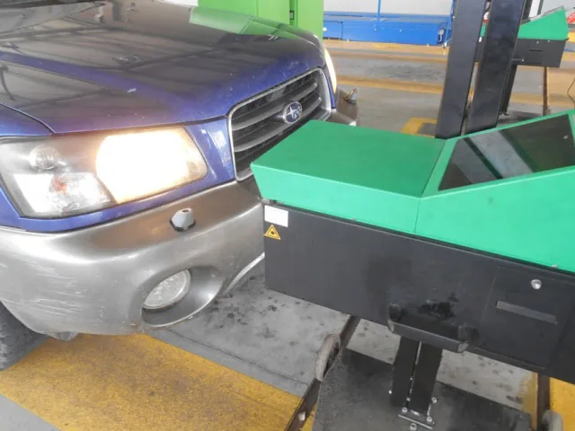
Operated brake testing, suspension shock testing and camber measurement equipment to support the assessment of vehicle condition and safety.
Vehicle inspection proceduresAutomotive testing equipmentEmissions testing & complianceVehicle safety assessment
This experience strengthened my understanding of vehicle systems and technical inspection procedures, and reinforced the importance of measurement accuracy, safety standards and systematic technical evaluation.
05 | Personal design projects
Alongside my academic work, I develop independent design projects to strengthen my skills in 3D modelling, mechanical design and visualisation, using SOLIDWORKS, Fusion 360 and Blender — from mechanical components to automotive models.
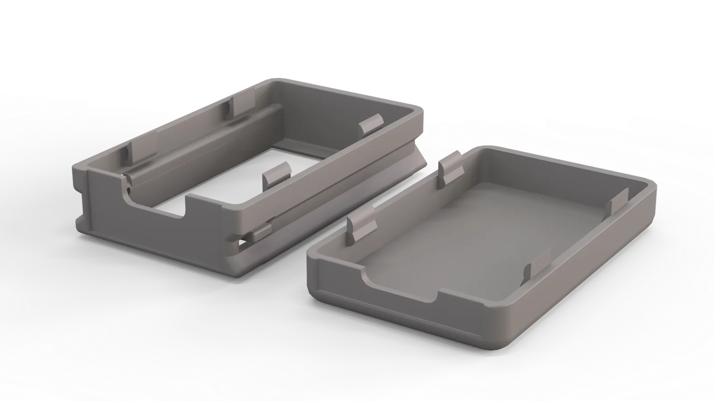
A custom enclosure for an ESP32-S3 LCD device, designed to attach to an athlete's vest while keeping the display visible and accessible during use. The design focused on component housing, secure mounting and practical access to the screen — turning an electronic device into a wearable solution for sports applications.
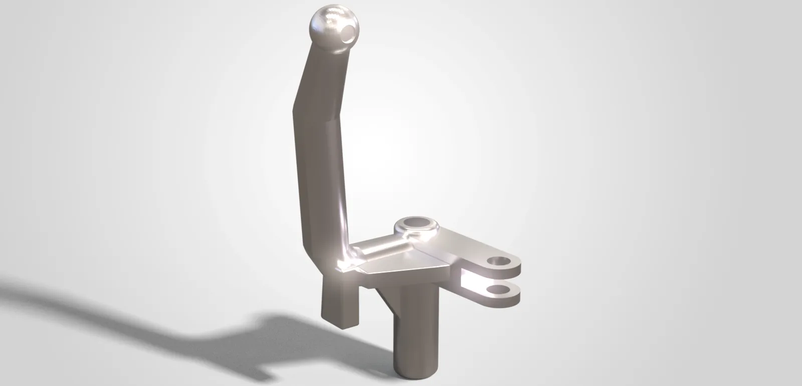
A mechanical lever component intended to assist with lifting an ambulance bed. The project focused on developing practical component geometry suitable for integration into a lifting mechanism, considering its intended movement and mechanical function.
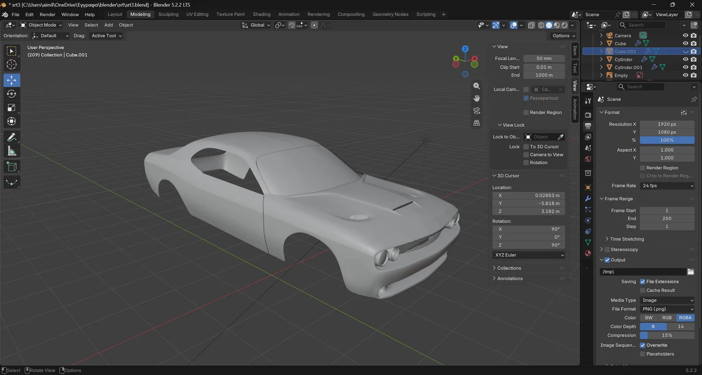
An ongoing personal project focused on the 3D modelling of the Dodge Challenger SRT Hellcat in Blender, exploring automotive proportions, exterior styling and the development of a three-dimensional vehicle model.
A completed 3D visualisation project of the McLaren MCL36, developed in Blender through 3D modelling, material assignment and studio lighting configuration.
3D modellingMaterials & coloursLightingRendering
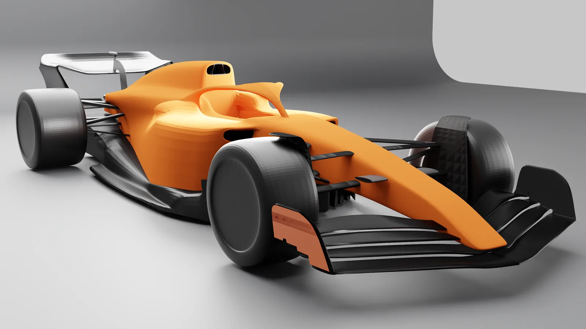
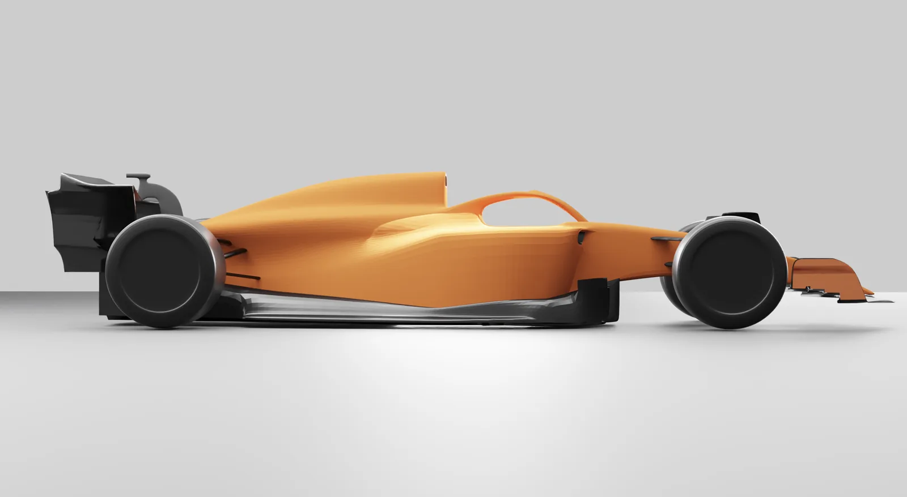
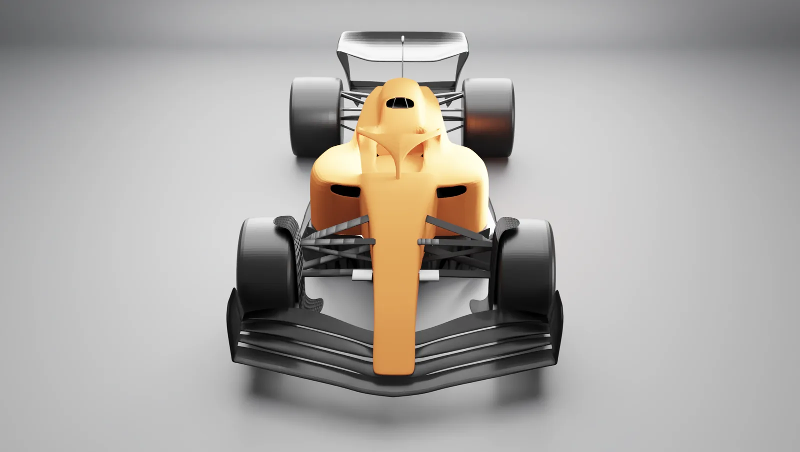
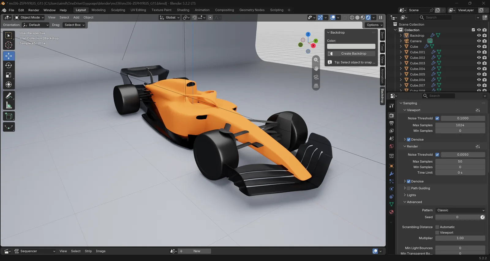
Foundation • Credentials • Continuous learning
A mechanical engineering foundation supported by continued development in CAD, simulation and automotive visualisation.
Driven by a strong interest in automotive engineering, vehicle performance and design optimisation.
Traditional drawing • Digital presentation • Independent creative work
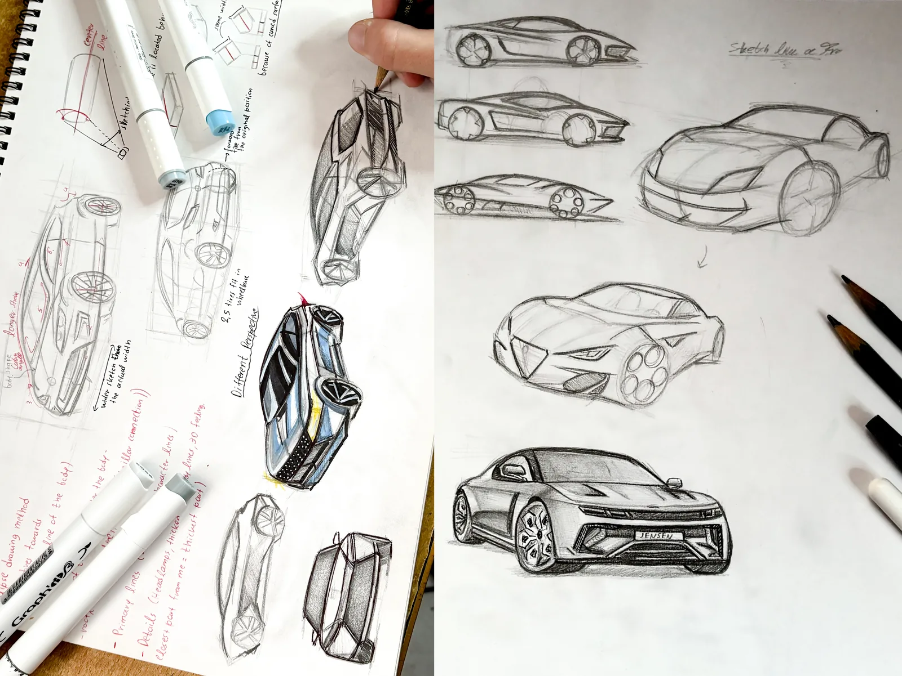
Alongside my engineering background, I pursue automotive illustration through traditional drawing and digital image editing. This work develops attention to detail and helps me communicate visual ideas. Using Adobe Photoshop, I prepare and refine visual content for presentation. I also manage an Etsy shop featuring my artwork, combining my interest in automotive design with independent creative work and online product presentation.
My automotive sketches are inspired by professional automotive design techniques and tutorials, focusing on vehicle proportions, perspective, body shapes and fine details. Through regular practice I aim to improve my sketching and understand how to represent design concepts accurately on paper.
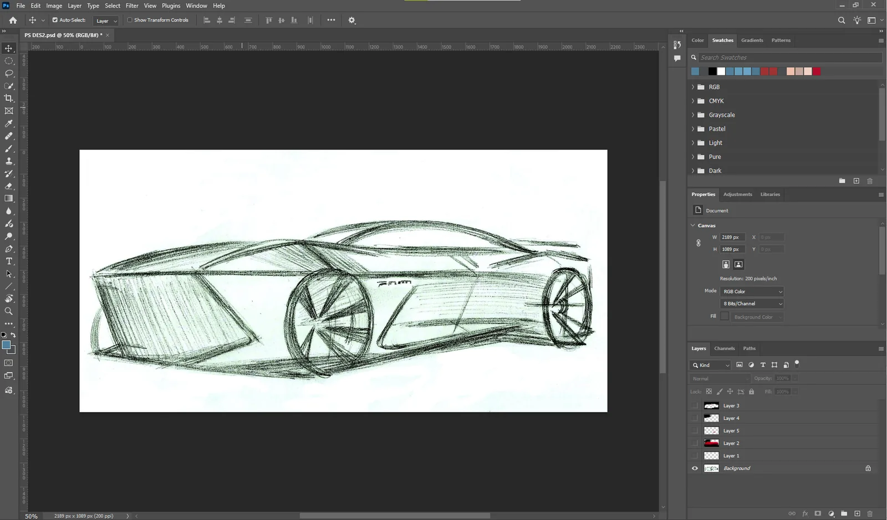
I use Adobe Photoshop to refine and prepare my automotive artwork for digital presentation — enhancing visual quality, adjusting details and creating polished images suitable for online display and promotion.
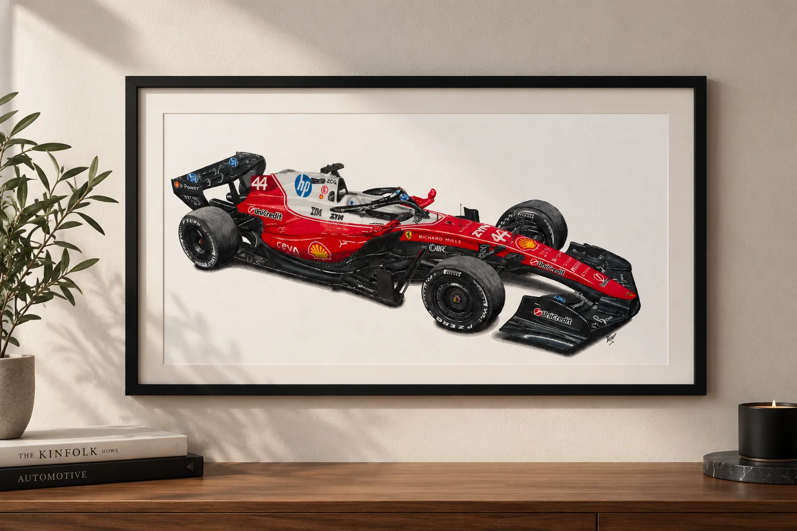
I manage an independent Etsy shop featuring my original automotive illustrations as digital products. Through framed mockups, listing images and promotional content, I aim to present my artwork professionally while developing my skills in digital product presentation.
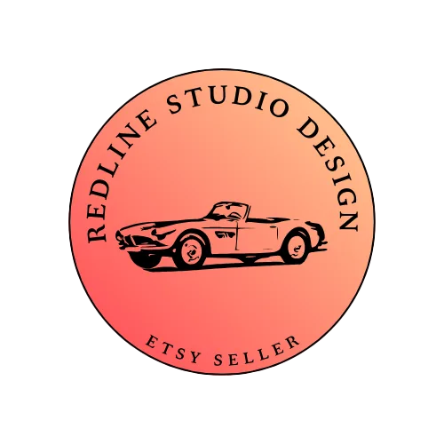
Contact
My goal is to develop my engineering skills through practical design work, computational simulation and continuous technical learning, with the ambition to contribute to challenging engineering projects in vehicle aerodynamics, mechanical design and high-performance engineering.